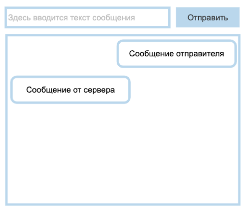

Домашняя работа к модулю 22
- Задание 1
Изобразить с помощью элементов SVG флаги пяти стран: Россия, Франция, Финляндия, Швейцария, Япония.
Каждый SVG-элемент с флагом должен иметь размер 180 на 120 пикселей. - Задание 2
Сверстать кнопку, которая будет содержать в себе icon_01. При клике на кнопку иконка должна меняться на icon_02. Повторный клик меняет иконку обратно.
- Задание 3
Сверстать кнопку, клик на которую будет выводить на экран следующие данные:
1. Размеры экрана пользователя (ширина и высота).
2. Координаты местонахождения пользователя. Если пользователь отказался дать доступ к местоположению или данная функция недоступна в бразуере, вывести вместо координат сообщение «Информация о местоположении недоступна».
- Задание 4
Сверстать кнопку, по клику на которую будет отправляться запрос к Timezone API. В запросе нужно отправить координаты местоположения пользователя, полученные с помощью Geolocation API. В ответ на запрос придёт объект, из которого нужно вывести на экран следующую информацию:
1) временная зона, в которой находится пользователь: параметр timezone;
2) местные дата и время: параметр date_time_txt.
- Задание 5
1) Реализовать чат на основе эхо-сервера wss://echo-ws-service.herokuapp.com/ Интерфейс состоит из input, куда вводится текст сообщения, и кнопки «Отправить». При клике на кнопку «Отправить» сообщение должно появляться в окне переписки. Эхо-сервер будет отвечать вам тем же сообщением, его также необходимо выводить в чат:
2) Добавить в чат механизм отправки гео-локации:

При клике на кнопку «Гео-локация» необходимо отправить данные серверу и в чат вывести ссылку на https://www.openstreetmap.org/ с вашей гео-локацией. Сообщение, которое отправит обратно эхо-сервер, не выводить.